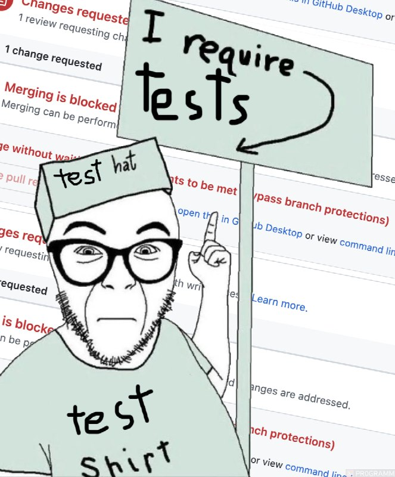

Мы же не пишем документацию на 80%...

В Java-мире 80% считаются эталоном. В реальных проектах значение часто ниже. Буквально на днях на интервью услышал 60%. Есть ещё в людях дух авантюризма! Но как можно доверять этим оставшимся 20 и уж тем более 40 непокрытым процентам?
Я периодически сталкиваюсь с ситуациями, когда на ревью приходят PR'ы, в которых изменился код, но не пострадал ни один существующий и не написан ни один новый тест... За это можно получить заслуженный Needs Work или, если выражаться более толерантно — Request Changes. Ну разве не хочется иметь уверенность в сегодняшнем и, что более важно в завтрашнем дне?
Ну, наверное, если вы единственный мейнтейнер и/или время жизни проекта короткое, то без тестов и вовсе можно обойтись. Во времена моей работы на галере так и было. Весь код небольшого проекта на квартал со вторым разработчиком мы знали вдоль и поперёк. И ни одного теста! Правда, перед передачей заказчику тесты всё же написали. Благородно! Ну или того договор требовал, не знаю...
Но если с проектом соприкасаются незнакомые с ним разработчики? Они же не знают всего контекста. В роли незнакомца может и LLM выступать. Да и вы не вспомните после долгого перерыва, что там происходит. Нет ничего лучше зафиксировать правильное поведение через тесты. Это своего рода компилируемая и исполняемая документация. Мы же не хотим документацию на 80%?
Так давайте покроем всё. Интеграционные тесты быстро делают покрытие + сразу видны все сценарии. Юнитам добьём недостающее покрытие, которое приводит к уже описанным ранее сценариям. Ну и приятным бонусом в коде не останется пока недостижимых веток. Останутся ли они недостижимыми после внесения новой фичи?
Да, бывают технические моменты, когда условный jacoco не может понять, что ветка покрыта, но это скорее редкость. Ну и, конечно, для этого предусмотрен механизм исключений. Правда, внесённое единожды исключение должно приводить к тому, что при внесении изменений в код оно должно быть пересмотрено: сами утилиты, которые считают покрытие развиваются + меняется код, который в текущем состоянии может быть уже и можно покрыть, а может его и вовсе уже нет.
Может от DTO хотя бы не будем требовать 100% покрытия? Но ведь его содержимое используется для выбора ветки выполнения. Какие разные пути он может пройти? Как будет влиять на это изменения кода в будущем? Наверное, вы уже поняли: я бы не делал никаких исключений.
Требуем 100% покрытие кода?
← Назад к списку статей